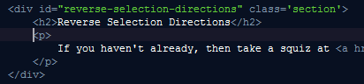
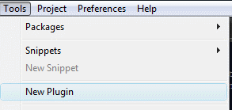
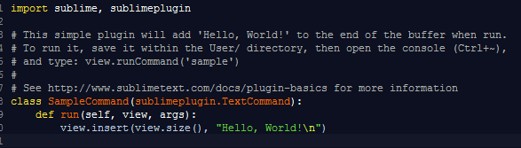

One of the many great features Sublime has is the ability to write extensions using the python programming language. If you don't know python there are many great resources on the internet for learning. I'll try to point out any features used unique to python along the way so if you are already a programmer it should be easy enough to follow along.
We'll take a look at creating a few plugins. The first, a very basic, though very useful command will reverse the directions of each selection so commands that extend in the prevailing direction can be better controlled.
The next one will be a command that first takes an
input from the user to use as a cmd string then runs
a subprocess in a background thread, finally
displaying the stderr/stdout results in a new tab. This
will use
If you haven't already, then take a squiz at view concepts section of this guide. You should also be roughly acquainted with packages and configuration.
|  |
Poor example of what you'd use it for but the purpose is to show the flipping of the directions. |


Packages/User/reverseselections.py
Look at the first line:
import sublime, sublimeplugin
This tells python we want to access functions, classes and other objects from these namespaces.
sublime
contains the core classes representing regions etc, and sublimeplugin, the base classes for plugins.
The next non commented line:
class SampleCommand(sublimeplugin.TextCommand):
The first word (yellow in this theme) is the
class
keyword telling python that a class definition starts.
Next,
SampleCommand
represents the name of the class from which the command name will be derived.
Here the resulting name will be
sample
due to the following process.
Command(which is not mandatory) this will be stripped
| ClassName | commandName |
|---|---|
| SampleCommand | sample |
| Sample | sample |
| MyCoolCommand | myCool |
| ReverseSelectionDirections | reverseSelectionDirections |
Finally, inside the parantheses is found
sublimeplugin.TextCommand
, which tells
python the plugin should inherit from this base class.
The fact it is a TextCommand
means that the plugin will
operate on a View.
( Remember the application hierarchy and command types ?)
The actual function which run
s the command:
def run(self, view, args):
defis the python keyword to denote the start of a function definition
runis the name of the function which must be implemented
selfis the
instanceof the plugin class
viewis a reference to the View the command is operating on
argsis a list of strings passed in when the command was run.
For example if you ran the command from a binding as so:
The args passed in would be ['lines', '-1']
It helps to set up your binding first so you can easily test your commmand throughout its development. Delete the existing class and type in the following
class ReverseSelectionDirections(sublimeplugin.TextCommand):
def run(self, view, args):
print args
Open your User/Default.sublime-keymap file and add the following binding
Open the python console (ctrl+backquote) and look for the (empty) args to be printed.
In python an empty list is represented as []
Binding Working? Great
class ReverseSelectionDirections(sublimeplugin.TextCommand):
def run(self, view, args):
for sel in [ for sel in ]:
.
Comments
blog comments powered by Disqus